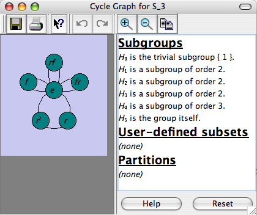

This page documents the interface for the large view of a cycle graph. A cycle graph is one of Group Explorer’s four visualizers, all of which can appear either in group info pages, sheets, or in their own pages. When they appear in their own pages, this is refered to as a “large view,” and you can read about it in general here. This page covers the specifics for large views of cycle graphs.

You can zoom in and out of cycle graphs with your mouse wheel.
The center of zooming is always the center of the view, so if you wish to zoom around a different center, first click and drag to move that point to the center of the view, then you can zoom in and out centered on that point.
To restore the default magnification level (which fits the whole cycle graph into the view), right-click (control click on Mac) anywhere in the cycle graph.
The controls in the right side of the large window for cycle graphs are described in the help page for subset controls.